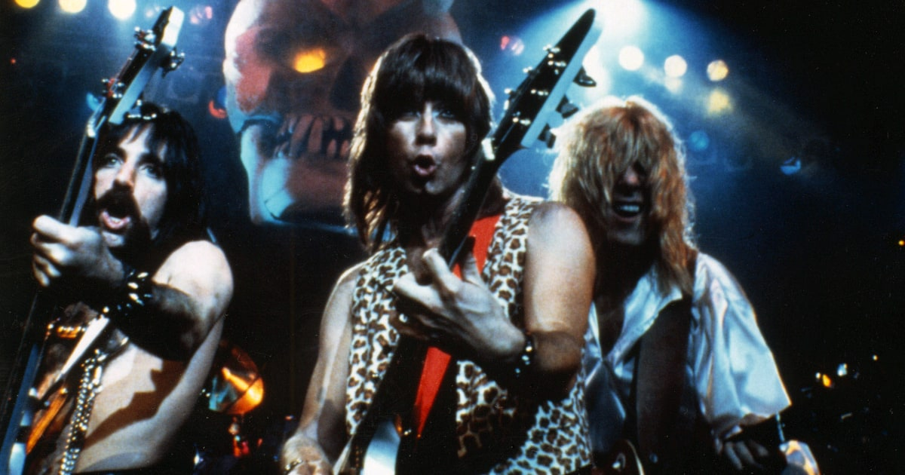

About Spinal Tap
Looking for: Drummer. The band Spinal Tap first appeared in a video aired as part of a 1979 sketch comedy special called "The TV Show", a project spearheaded by Rob Reiner and Micheal McKean.
Meet the Band
In 2006, Nigel Tufnel appeared in a Volkswagen TV commercial highlighting their offer of a free, exclusive First Act guitar with the purchase of qualifying automobiles. The guitar features knobs and inlays with the Volkswagen logo and pre-amps that allow it to be played through the car's stereo system. Also in 2006, the song "Gimme Some Money" was used in a TV commercial[citation needed] for Open from American Express, "Tonight I'm Gonna Rock You Tonight" appeared in Harmonix's video game Guitar Hero 2 and "Christmas with the Devil" appeared in BBC One promo spots for the network's Christmas program.